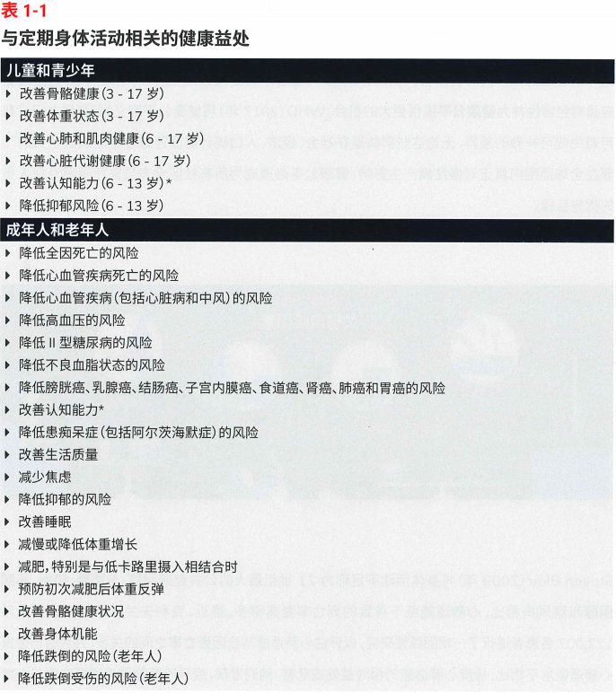
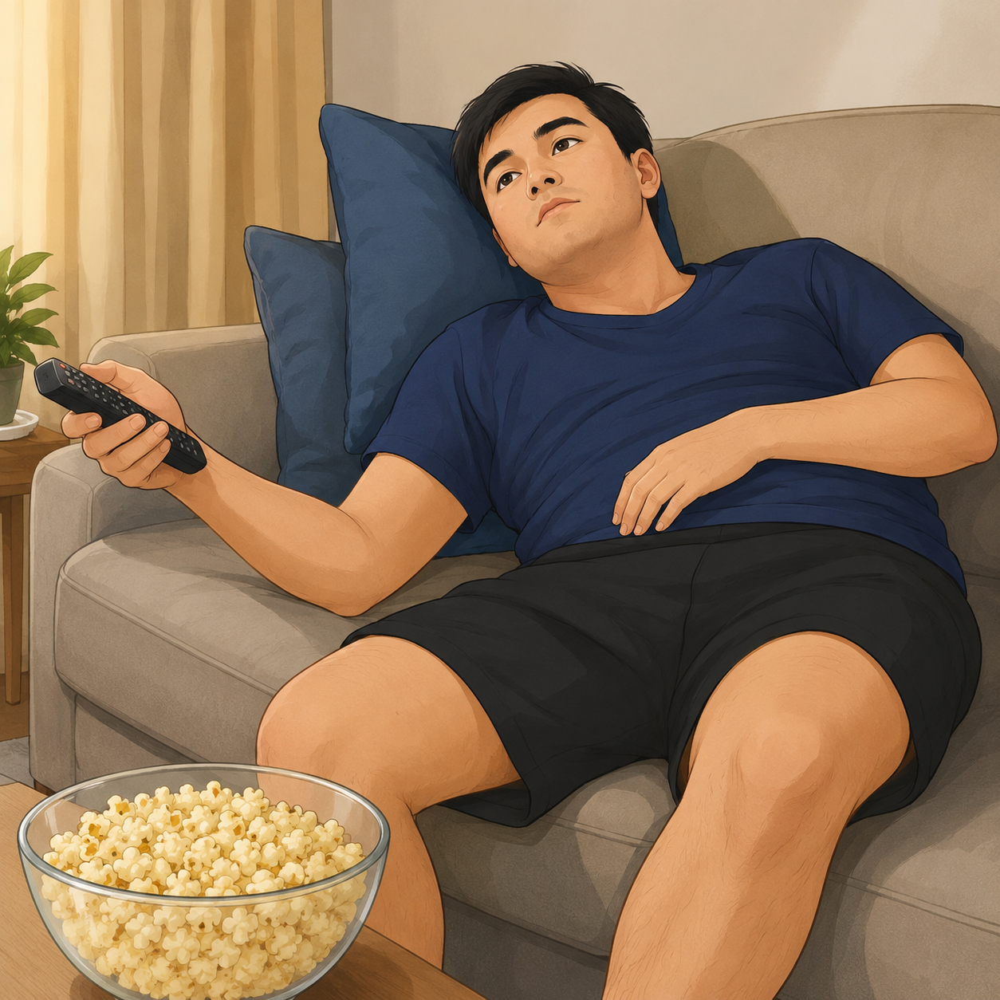
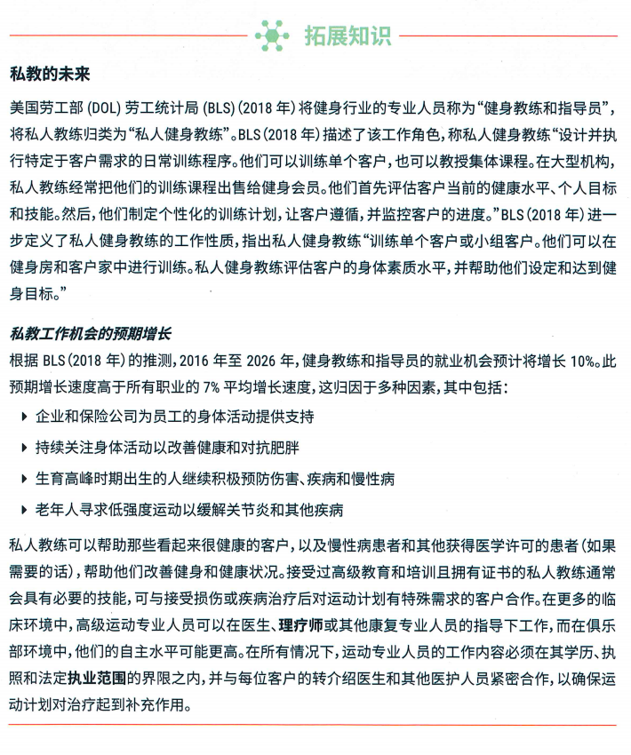
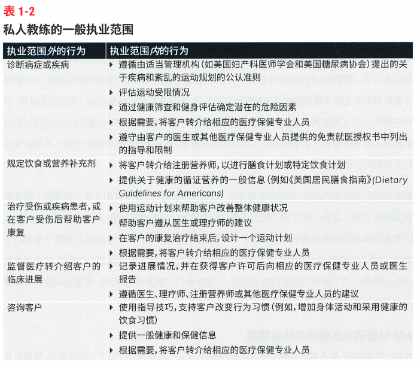
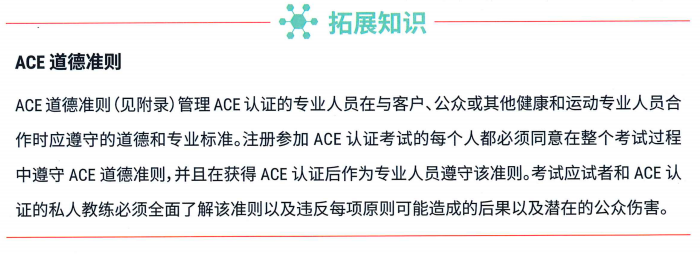
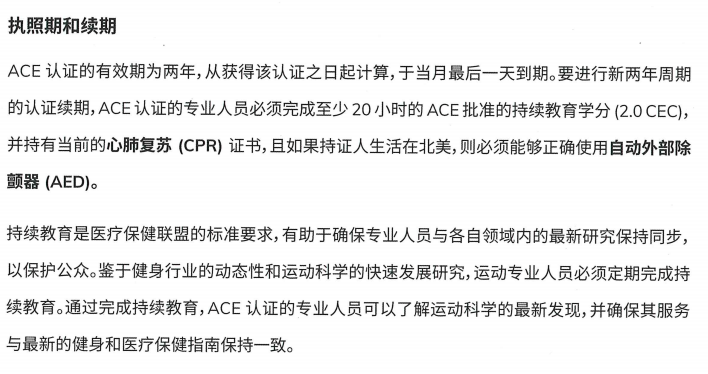
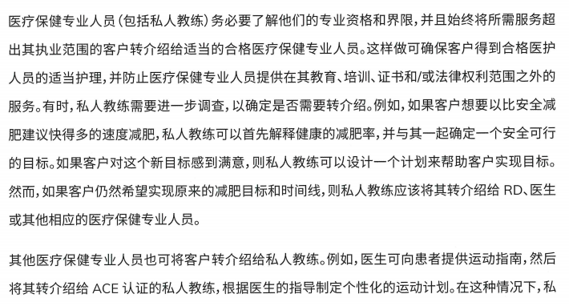
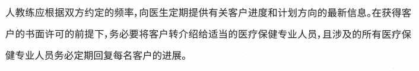
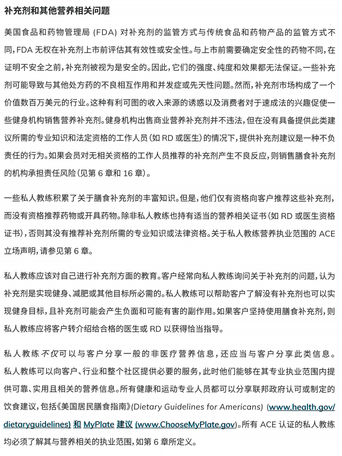
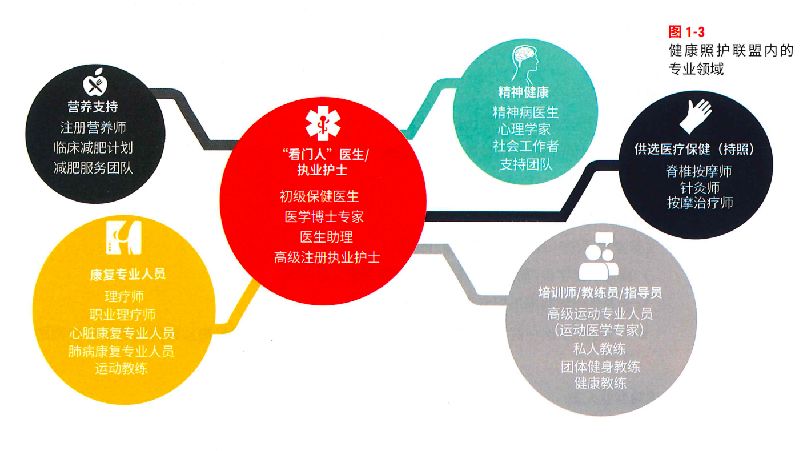

第一部分：学员预习专用
学习目标
学完本章，你应当能够：① 解释ACE认证私人教练的角色和执业范围；② 区分私人教练可以提供的服务与需要转介的事项；③ 说明私人教练在健康照护联盟中的协作位置；④ 说明持续教育、学位和专业资质对职业发展的作用。
本章核心
ACE 私人教练的专业性，由四件事共同定义：① 在法定执业范围内服务 ② 遵守 ACE（American Council on Exercise，美国运动委员会）职业道德准则 ③ 在健康照护联盟中找到自己的协作位置 ④ 通过持续教育保持职业长期发展。
本章内容
表1-1
| 板块 | 核心问题 | 高频考点 |
|---|---|---|
| 1. 法定执业范围 | 我合法能做什么、不能做什么 | 表 1-2 / 5 件不诊断不开菜单不治疗不主导康复不开药 |
| 2. 职业道德准则 | 法律允许的事里，我应该怎么做 | HIPAA 隐私 / 2 年 20 小时 2.0 CECs / 表 1-3 教学行为 / 安全优先：消除 ＞ 告知 |
| 3. 健康照护联盟 | 我和医生、营养师、康复师的关系 | 医师 = 看门人 / NCCA 质量标准 / 双向转介 |
| 4. 职业发展 | 持证之后往哪儿走 | 深耕专项 / 学历深造（运动科学等）/ 跨界资质（如 RD、SNC） |
关键数字
表1-2
| 数字 | 含义 |
|---|---|
| 4 + 1 | 非传染性疾病（NCD）可变危险因素：身体活动不足 + 吸烟 + 营养不良 + 过度饮酒 + 久坐行为（Sedentary Behavior） |
| 2 年 / 20 小时 / 2.0 CECs | ACE 续证周期 + 每周期最低继续教育时长 + 继续教育学分 |
| 2030 | WHO 全球降低成年人和青少年久坐不动比例的目标年 |
| 122,007 | Mandsager 等人 2018 年心肺适能与全因死亡率回顾性研究的样本量（克利夫兰诊所） |
| 2 SD | 极度心肺适能定义：心肺健康比同年龄同性别均值高 2 个标准差，全因死亡率最低 |
名词与缩写
表1-3
| 缩写 | 全称 | 中文 |
|---|---|---|
| ACE | American Council on Exercise | 美国运动委员会 |
| NCCA | National Commission for Certifying Agencies | 美国国家认证机构委员会 |
| NCD | Non-Communicable Diseases | 非传染性疾病 |
| HIPAA | Health Insurance Portability and Accountability Act | 美国健康保险流通与责任法案 |
| CEC | Continuing Education Credit | 继续教育学分 |
| CPR | Cardiopulmonary Resuscitation | 心肺复苏 |
| AED | Automated External Defibrillator | 自动体外除颤器 |
| RD | Registered Dietitian | 注册营养师 |
| SNC | Sports Nutrition Coach（ACE 体系） | ACE 运动营养咨询师 |
| FDA | U.S. Food and Drug Administration | 美国食品药品监督管理局 |
| WHO | World Health Organization | 世界卫生组织 |
| KP | Key Point | 关键点 / 支撑点 |
执业范围速览
ACE私人教练核心边界
5件绝对禁止
- 诊断病症/病因
- 开个性化饮食菜单
- 治疗/主导康复
- 监测临床康复指标
- 心理治疗/超出资质提供补充剂或药物建议
5件合规可以做
- 健康筛查+风险评估
- 一般性营养科普
- 康复结束后的运动支持
- 客观记录+转介报告
- 行为改变指导
学习路线
第一站：理解行业大背景（板块 1）→ 第二站：明确法律红线（板块 2）→ 第三站：守住道德规范（板块 3）→ 第四站：找到协作位置（板块 4）→ 第五站：规划职业路径（板块 5）。每一站后面都配小节回顾与练习，每节读完即时自测，章末有完整收口总结。
第二部分：正文部分
本章导读
本章介绍ACE认证私人教练的角色、执业范围和职业责任，并说明私人教练在健康照护联盟中的协作位置以及职业发展路径。清楚这些内容，是安全、合规地开展私人教练服务的基础。
导入：身体活动的健康价值与公共健康背景
在进入执业规则前，教材先通过表 1-1 身体活动相关的健康益处，奠定了私人教练的行业价值，这里有两个核心考点，也是 ACE 对行业的核心定位：
1. 两大全覆盖原则
身体活动的益处覆盖全生命周期与全人群（PA = Physical Activity，即3岁到老的"全龄全益"运动），从儿童、青少年、成年人到老年人，无一例外。益处不仅局限于身材改变，身体功能、认知能力和情绪状态也全面改善，从降低慢性疾病风险到全面提升生活质量。当客户问"我练这个能瘦吗"时，不要只强调减脂效果，而应告诉客户规律运动还能提升睡眠质量、减轻焦虑、改善认知功能、降低多种慢性病风险，避免将私人教练的价值局限于"塑形教练"。
2. 表 1-1 与定期身体活动相关的健康益处

图1-1
注释:咨询委员会将身体活动的健康益处的证据分为有力证据、中等证据、有限证据或不可分级证据。此表中仅包含具有有力证据成中等证据的结果。
*有关认知和大脑健康的其他组成部分,请参见《美国居民身体活动指南》(第2版)(Physical Activity Guidelines for Americans (2nd ed.))的表2-3。
转自美国卫生和公众服务部(2018年)发布的《美国居民身体活动指南》(第2版)(Physical Activity Guidelines for Americans [2nd ed.])
表1-1是ACE对私人教练行业价值的"官方背书"，运动的好处从3岁到老年全覆盖。八大益处可概括为：心、脑、代谢、骨骼肌、跌倒预防、失眠改善、焦虑与抑郁缓解。
3. 非传染性疾病（NCD）的核心诱因——"四加一" 风险因素

图1-2
教材明确指出：身体活动不足、吸烟、营养不良、过度饮酒，是导致非传染性疾病（NCD）的四大可变危险因素；久坐行为（Sedentary Behavior）正被学界提议作为第五个独立风险因素纳入，形成"四加一"模型。这些可变危险因素如同多条相互作用的路径，均会提高患病风险，久坐行为还可能进一步增加健康负担。据WHO数据，非传染性疾病每年导致约4100万人死亡，占全球死亡总数的71%，远超传染性疾病，其中心血管疾病、癌症、糖尿病、慢性呼吸道疾病是主要致死病因。NCD四大可变危险因素全部和生活方式相关，这就是私人教练存在的意义。需要注意的是，当客户问"我为什么会得糖尿病"时，教练不应直接给出病因诊断或简单归因于"不运动"，而应解释NCD是可变危险因素共同作用的结果，教练可以帮助干预其中可改变的因素，但病因分析需要医疗专业人士。
4. 公共健康危机与权威指南
教材引用世卫组织数据：身体活动不足是 21 世纪最严重的公共健康问题，心肺功能低下引发的死亡率，远高于我们熟知的肥胖、吸烟、高胆固醇、糖尿病。与之相反心肺功能极高的个体具有最低的全因死亡率。

图1-3
Steven Blair(2009年)将身体活动不足称为21世纪最大的公共健康问题。与肥胖、吸烟、高胆固醇和糖尿病相比,心肺适能低下导致的死亡率要高得多。最近,克利夫兰诊所的研究人员对122,007名患者进行了一项回顾性研究,以评估心肺适能与全因死亡率之间的关系,并评估与适度心肺适能水平相比,极度心肺适能的相对益处或危害。他们发现,经风险调整的全因死亡率与心肺适能之间存在负相关关系,其中较低心肺适能的调整后死亡率风险大于或等于心血管疾病、糖尿病和吸烟的死亡率风险(Mandsager等人,2018年)。此外，Mandsager和同事(2018年)发现,具有极度心肺适能的个体(被归类为心肺健康比年龄和性别平均值高2个标准差)具有最低的经风险调整的全因死亡率,并且益处扩展到高血压或70岁及以上的患者。这项研究支持Blair(2009年)报告的发现,并为实现和维持高水平心肺适能的重要性(Mandsager等人,2018年)提供了支持。
克利夫兰诊所这项122,007人的大样本研究清楚地表明：较低心肺适能的死亡风险 ≥ 糖尿病和吸烟的死亡风险，而心肺适能极高（高于均值2个标准差）的个体全因死亡风险最低。这就是为什么教练要把心肺训练放在首位。
同时参照2018 年美国居民身体活动指南，该指南针对儿童、成年人、老年人、妊娠期 / 产后女性、慢性疾病人群，制定了改善心肺功能、肌肉健康、骨骼强度、平衡力与柔韧性的运动方案，核心目标是 2030 年前全球降低成年人和青少年久坐不动的比例。2030年前降低久坐比例是WHO的全球行动目标，如同一张共同的路线图，为各国制定政策、建设环境和评估身体活动促进工作提供方向，私人教练可以在这个目标中发挥推动作用。
核心要义凝练：
私人教练的行业价值源于公共健康危机。当前非传染性疾病（NCD）导致的死亡率已超过传染性疾病。ACE将私人教练定位为"健康照护联盟"的一员，其核心任务是通过干预可变危险因素来提升全人群的全生命周期健康。

图1-4
BLS预测私人教练就业增长10%（高于平均水平7%），反映了行业需求。私人教练如同客户运动过程中的向导，通过计划设计、运动指导和行为支持帮助客户改善健康相关行为，但不代替医疗专业人员。从业者应具备胜任岗位的专业能力，并遵守所在地法规、机构要求和职业规范。
图1-5
1 ACE私人教练认证
1.1 "执业范围"的定义
执业范围界定了特定专业人员可以提供的服务，相当于法律划定的执业围墙——围墙内是教练的合法服务区，围墙外是其他专业人士的专属领地。就像道路上不同车道各行其道，不同专业人员也在各自职责范围内安全协作。ACE认证私人教练应在图1-2所示范围内工作，并同时遵守所在地法规和机构规定。超出范围提供受监管的医疗、营养或心理健康服务，可能违反当地法律和ACE职业规范。

图1-6
1.2 ACE认证私人教练的执业范围
这些行为是教材明确的执业红线，私人教练无资质开展，对应专业人员分别为：
1. 禁止诊断任何疾病（专属执业医师）
诊断是医生的职责，教练只管"能不能动"。私人教练可以把客户目标、医学许可和运动原则转化为可执行的训练安排，但不负责医学诊断。当客户说"我膝盖疼，你帮我看看是什么问题"时，不能根据经验判断"可能是半月板损伤"，而应说"膝盖疼痛的原因需要专业医生诊断，我可以帮你做筛查，必要时转介"。教练不对疼痛原因作医学诊断，应根据筛查结果、客户反应和必要的医学许可，决定调整训练或转介。切记不要把"评估"当成"诊断"。
2. 禁止开具个性化饮食菜单（专属注册营养师）
制定个性化饮食方案是注册营养师（RD）的职责，教练只管"吃什么原则"。教练可以推荐"ChooseMyPlate.gov"等官方工具，但不能手写菜谱。
3. 禁止治疗受伤客户、主导客户康复（专属康复治疗师）
治疗康复是物理治疗师（PT）的职责，教练只管"康复后的功能训练"。客户从PT那里"毕业"后，才能来找教练做功能性训练。
4. 禁止监测医疗转介客户的病情恢复进度（专属临床医师）
临床监测是医生的职责，教练只记录"运动相关进展"。教练应客观记录训练表现和运动反应，不应将记录解释为医学诊断或临床康复评定。
5. 禁止提供专业（如心理）咨询（专属持证咨询师）
心理咨询是持证咨询师的职责，教练只管"倾听+保密+转介"。私人教练可以倾听、共情并提供一般性支持，但心理评估和治疗应由合资格的心理健康专业人员完成。教练可以共情倾听，但解决方案要转介给专业人士。
1.3 ACE认证私人教练的知识、技能和能力
1. 评估客户健康危险因素，根据客户需求与身体状况，及时转介至对应医疗、营养、康复专业人员。转介是教练的核心技能之一，是专业能力的体现。私人教练需要保持风险识别意识，发现超出执业范围或需要进一步评估的情况时及时转介。会转介的教练才是合格的教练。
2. 仅可提供一般性营养科普信息，不可制定具体饮食方案，膳食计划交由营养师完成。简言之，科普可以，处方不行。私人教练可以讲解公开的健康饮食指南，但个体化治疗性膳食应由具备相应资质的营养专业人员制定。美国居民膳食指南和MyPlate是教练可以使用的两个官方工具。
3. 辅助客户遵从理疗师、康复师制定的运动计划，或在客户康复期后执行配套运动方案。教练应在医学许可和明确限制内开展运动指导，诊断和治疗由相应的合资格专业人员负责。对于获得医学许可的客户，私人教练应在医疗人员给出的限制和建议范围内设计并实施运动计划。康复期客户的运动方案，本质上是医生出方向、教练执行细节。
4. 客观记录客户的身体、伤情发展状况，不提供医疗建议、不监测临床康复指标。记录的原则是记"练了多少"，不记"好了多少"。私人教练记录运动表现和训练反应，不根据这些记录作出医学诊断，记录内容只涉及运动表现和功能状态，不涉及临床医学指标。
5. 运用运动指导技巧、基础行为改变技巧辅助客户，不开展专业心理干预。行为改变是教练的专业领域，深度心理干预则是咨询师的专业。行为改变方法可以支持客户建立运动习惯，但不能代替心理健康问题的诊断和治疗。教练的行为改变技术是循证的，但仅限于支持性辅助。
因此，教练的角色是医疗团队（医师、营养师、康复师、心理咨询师）的辅助者与转介枢纽。教练需要判断客户是否需要马上转介绍，并接收由上述医疗保健专业人士转介绍而来的客户，为其设计训练方案。
执业范围的核心原则
- 绝不跨界从事其他医疗健康保健专业人士的专属服务；
- 为客户制定的运动方案，不得与客户的健康照护团队建议相悖，必须严格配合医疗团队的要求。
执业范围的核心原则可以归结为两点：不越界、遵医嘱。私人教练是健康照护联盟中的协作者，需要尊重其他专业人员的职责和建议。教练必须遵守医疗专业人员提出的运动限制和注意事项；若限制不清，应在训练前请客户进一步确认。
核心要义凝练：
执业范围即法律红线。私人教练的专业性体现在"知其不可为"。教练的角色是医疗保健专业人士的辅助者与转介者。
1.4 职业责任和道德规范

图1-7
道德准则是法律允许范围内，保障职业存续的核心规范，从考试阶段到持证执业全程遵守，也是 ACE 考试的高频考点。道德准则是法律的"温柔补充"：法律告诉你不能做什么，道德告诉你应该怎么做。执业范围回答"可以做什么"，道德规范进一步说明"应当怎样做"。合法是最低要求，专业人员还应承担伦理责任。道德准则让你从"合法"走向"专业"。核心要求如下：
1. 考试与继续教育规范
1）必须诚信的参与认证考试；
2）持证后每两年需完成至少 20 小时 ACE 认可的继续教育，获取 2.0 个继续教育学分，同时必须保持CPR 证书持续有效、按时更新。

图1-8
续证可以记为"222"：2年周期、20小时、2.0 CECs，加上CPR有效，北美持证人还需AED合规。取得认证只是职业起点，持续教育和续证用于更新知识、保持能力，并证明专业人员持续履行职业责任。如果证书快到期却忙于工作忘了续证，应立即查看ACE官网了解续证截止日期和CECs要求，制定补学分计划。证书过期后没有"宽限期"可以继续执业，持续教育是进入健康照护联盟的"准入门槛"。
2. 客户隐私保护（HIPAA 法案）
私人教练应将客户健康与训练信息视为敏感信息并严格保护，参照HIPAA（美国《健康保险携带和责任法案》）的隐私保护原则进行管理。客户信息默认应保密，披露前应确认授权、法律依据和必要范围。客户健康信息应像其他敏感健康资料一样受到严格保护，只能在获得适当授权或法律要求的情况下披露。客户的健康信息是"最高机密"，宁可多保密，不可多透露。例如，当客户配偶打电话询问训练进展和健康状况时，不能透露任何信息，而应说"对不起，没有客户的书面授权，我不能讨论任何相关信息，建议让您太太直接联系我们"。必须有书面授权，不是"家属问就可以说"。HIPAA是否直接适用于某位教练，取决于其工作场景和法律身份。
3. 客户安全保障（最高优先级原则）
私人教练需不计代价、最大限度降低客户运动风险，这是 ACE 道德准则的核心：
- 保证训练设施设备完好维护，地面与器械保持清洁、干燥；
- 必备应急计划与急救用品，这是执业基础配置；
- 精准识别高风险客户并及时转介，合理设定运动强度避免运动损伤；
- 考试答题逻辑重点：若题目中多个选项均符合安全要求，需选择能最大程度消除风险的答案。例如跑步机故障，"搬走故障跑步机" 优于 "张贴故障提示"，考点核心是考察我们 "极致保障客户安全" 的执业理念。
安全：所有运动专业人员都应尽可能地减少每个人在健身设施中面临的风险。这包括配备具有适当间隔和良好工作状态的设备;有适用于便携式设备(包括稳定球、哑铃和壶铃)的机架、架子、挂钩或其他放置点;并确保地板和设备已经过清洁和维护且整洁干燥。运动专业人员还应注意设施的清洁度,包括使用后可使用擦拭巾或其他灭菌器来清洁设备。在发生伤害或事故时,应急计划、AED和适当的急救用品至关重要。
私人教练具有额外的客户特定风险管理责任,从第一次会议开始时,其应进行健康历史访谈,以便在运动前确定是否需要将客户转介绍给医生或客户是否存在针对某些运动的限制条件或禁忌症。私人教练还需要为初始运动计划的设计以及运动计划修改确定适当的运动及强度级别。然后,通过帮助客户以安全有效的方式进行运动且适当进阶,私人教练可以最大限度地降低客户受伤的风险,并提高服务质量。即使有最好的风险管理计划,也可能发生伤害和事故。因此,ACE建议所有ACE认证的专业人员购买职业责任保险,以便当客户在训练期间受伤时提供保护(见第16章)。
安全管理的铁律是：Eliminate（消除） > Inform（告知）。风险管理的重点是消除危险或有效隔离危险，仅提醒客户注意通常不能替代实际的风险控制措施。比如发现跑步机履带有轻微破损但还能用，正确的做法是立即断开电源、移出训练区域、联系维修，而不是贴个告示"请小心使用"。"还能用就先凑合"是最大的安全隐患。跑步机故障，搬走优于贴告示，这就是ACE的安全哲学。
4. 及时转介原则
当服务内容超出自身执业边界、专业能力，或客户训练目标远超自身执教范围时，必须转介至医生、营养师、康复师，或更适配的专业私人教练。
转介绍

图1-9

图1-10
转介是专业能力，不是"没本事"。健康照护联盟如同接力团队，私人教练既要完成自身职责，也要知道何时转介以及如何接收其他专业人员转介的客户。转介是双向的：教练发现超出执业范围的问题时应及时转介，也可在获得适当医学许可和限制信息后，接收医疗专业人员转介的客户。例如，当客户希望每周减重3斤（远超健康减重速度），不要直接答应并安排高强度训练，而应先解释健康减重速率（每周0.5-1kg），协商可行目标；若客户坚持极端目标，则转介RD或医生。担心转介显得"没本事"是常见误区，转介恰恰是最专业的做法。
5. 运动补剂规范
私人教练可以就补充剂提供一般性教育，包括标签信息、证据局限和潜在风险，但不应超出自身资质进行个体化推荐，也不应解释药物与补充剂的个体化相互作用。涉及客户疾病、用药、妊娠或特殊营养需求时，应转介给医师或合资格的营养专业人员。

图1-11
教练可以讲解补充剂的一般信息和风险，但是否适合某位客户，应由具备相应资质的专业人员评估。私人教练可以提供一般性教育，帮助客户理解补充剂信息，但不应超出资质进行个体化推荐或销售误导。补充剂建议必须符合当地法规和本人资质范围，不确定时应提供一般信息并转介。例如，当客户问"我练完应该喝蛋白粉吗"，正确的回答是"蛋白粉只是蛋白质的便捷来源，通过均衡饮食完全可以满足。如果你想确认是否需要，可以咨询注册营养师"。因为"有提成"就推荐，是职业道德红线。
6. 教材中表 1-3明确划分了在教学过程中的恰当与不恰当行为
表1-4
| 客户情境 | 教练不适合做的事（禁止行为） | 教练适合做的事（合规行为） |
|---|---|---|
| 脊柱前凸姿势站立 | 诊断客户脊柱前凸的原因 | 实施核心调理计划，改善臀部和脊柱肌肉的力量、柔韧性不平衡 |
| 尝试商业饮食减肥 | 帮助客户 "选用 / 制定" 减肥饮食 | 提供膳食指南与工具（如 ChooseMyPlate.gov），帮助客户做健康选择 |
| 肩袖物理治疗后 | 继续物理治疗运动 / 治疗肩部撞击 | 进行运动提高肩部稳定性，巩固物理治疗效果 |
| 髂胫束（IT 带）紧张 | 提供深层组织按摩缓解紧张 | 教客户使用泡沫轴做 IT 带肌筋膜自我放松 |
| 运动后肌肉酸痛 | 推荐非处方抗炎药物 | 讨论轻量动态拉伸技术，缓解不适 |
| 因配偶问题感到郁闷 | 倾听并提供改善建议 | 共情倾听、保密，必要时转介心理咨询师 |
表1-3的关键是区分一般性教育与受监管的诊断、处方和治疗，遇到后者应转介。可以把表1-3作为执业边界检查表，遇到类似情境时，先判断是否属于私人教练的职责，再决定指导、暂停或转介。遇到问题先想"我能不能做"，再做决定。
表格讲解：核心执业红线（ACE 明确禁止的行为）
ACE 教练的执业底线，也是所有教练必须遵守的准则：
1. ❌ 不诊断：不能判断客户脊柱前凸、疼痛等问题的 "病因"，这是医疗行为，只有执业医师可做。诊断就是找原因，是医生的活。教练可以说"这个姿势会导致核心力量不平衡"，不能说"你的疼痛是因为XX"。
2. ❌ 不开菜单：不能制定 / 推荐减肥饮食方案、给客户 "配餐"，只能提供通用膳食指南，不能做个性化营养处方。开菜单等于写处方，是营养师的活。教练可以发膳食指南链接，不能手写一日三餐食谱。
3. ❌ 不代替治疗：不代替物理治疗师实施治疗。客户在治疗期间或结束后参加训练时，教练应遵守医疗团队给出的运动限制和注意事项。治疗性运动是康复治疗师的职责。客户在物理治疗期间或结束后是否适合参加训练，应依据医疗团队的建议、运动限制和客户当前状态判断。教练不承担物理治疗职责。
4. 不越界提供手法治疗：未另行取得相应资质时，不提供深层组织按摩或徒手治疗；可在能力范围内教授客户自我筋膜放松（如泡沫轴）。手法治疗属于相应合资格专业人员的执业范围，教授自我放松与直接实施按摩或徒手治疗属于不同服务，应按本人资质和当地法规区分。
5. ❌ 不心理咨询 / 开药：不能提供心理问题解决方案、推荐药物，只能倾听、保密并转介专业人士。心理问题加药物建议是咨询师和医生的职责，教练是"情绪倾听者"，不是"心理医生"。
核心要义凝练：
安全管理：应优先消除或有效控制危险，不能只依赖口头告知。持续能力：认证并非终身有效，教练需按ACE要求完成继续教育并保持CPR/AED资格。隐私保护：应妥善保管客户信息；HIPAA是否直接适用，取决于具体工作场景和法律身份。
2 健康照护联盟
ACE 教材将大健康行业定义为健康照护联盟，这是我们理解执业边界、行业协作的关键：
2.1 健康照护联盟中的运动专业人员
健康照护联盟由多类专业人员组成。医师和护士负责相应的医疗照护与协调；其他成员可包括脊椎按摩师、针灸师、按摩治疗师、心理健康专业人员、康复专业人员、注册营养师、私人教练和团体健身指导员。各专业人员依据自身资质和执业范围协作。

图1-12
健康照护联盟涵盖医疗、护理、康复、营养、心理健康和运动等专业，联盟协作不改变各自的执业边界。医师是统筹者，教练是运动专家，各司其职、不跨界。
如果想和本地医疗专业人士建立转介关系，不要直接去医院门口发名片，而应通过参加医疗健康展会、加入专业协会、主动拜访诊所等方式建立联系。双向转介对双方都有价值，不是"单方面付出"。
专业边界与协作
联盟内各职业相互关联但执业范围不交叉，私人教练可搭建自身的健康照护资源网络，实现双向转介（如将异常客户转介至医师，医师也可将康复期客户转介至教练）。协作逻辑是"你中有我，我中有你，但各管各的边界"。教练不是单打独斗，是联盟作战。
2.2 运动专业人员认证项目的鉴定
ACE和健身行业的其他顶级认证机构为运动专业人员认证项目申请NCCA第三方鉴定。NCCA是鉴定协会（ICE）的鉴定机构，依据《NCCA认证项目鉴定标准》审查认证项目。ACE的私人教练、团体健身指导员、健康教练和医学运动专家等认证项目获得NCCA鉴定。需要注意的是，NCCA鉴定的是认证项目是否符合规范的质量标准，而不是对个人进行排名。职业认证用于确认个人达到能力标准，项目鉴定则由独立机构审查认证项目是否符合质量标准。考取ACE证书意味着获得NCCA认证体系内的专业资质，这是参与健康照护联盟协作的基础。向客户解释资质时，不要模糊地说"我是美国认证的私人教练"，而应说"我持有ACE认证，该认证项目通过了NCCA第三方鉴定"，避免只说证书名称而不解释背后的认证体系。
2.3 健康与健身行业的认可
ACE和其他健身专业组织通过推动NCCA鉴定、专业标准和合作倡议，提高运动专业人员在健康照护联盟中的认可度。职业认证用于验证个人是否达到特定岗位的能力标准；NCCA鉴定则评估认证项目的质量。
2.4 教育界的认可
联合健康教育计划鉴定委员会（CAAHEP）等机构通过对运动科学相关教育项目设立标准，促进专业教育与职业能力要求的衔接。完成获鉴定的教育项目不等同于自动取得职业认证；学位、认证和执照分别承担不同功能。
核心要义凝练：
私人教练处于健康照护联盟的一员。医师是联盟的"看门人"。NCCA认证：这是证书质量的保障标准，也是参与健康照护联盟协作的基础。双向转介：教练不仅是接收者，更是识别风险、将客户送回医疗系统的"第一哨兵"。
3 职业发展
结合 ACE 教材的职业规划，私人教练的发展路径分为三类：
图1-13
3.1 持续教育
持证后持续精进，聚焦体重管理、青少年体适能、运动表现提升、高级健身指导等专项，打造专业差异化。专项深耕意味着成为某一领域的专家，而不是"万金油"。私人教练可以根据服务人群和职业目标形成专业方向，并通过相应的继续教育提升能力。差异化竞争的核心就是专项能力。
3.2 学位
攻读运动科学、运动康复、营养学、公共健康等相关学位，可以帮助私人教练建立更系统的理论基础和研究素养。学历深造如同打牢"地基"，上面才能盖更高的楼。职业认证验证特定岗位的能力标准，相关学位则提供更系统的科学基础，两者作用不同，也不能替代受监管职业的执照。学历加证书，是专业度的双保险。
3.3 健康照护联盟的新专业领域
若想进入健康照护联盟中的其他职业领域，应按当地法规完成相应的学位、专业教育、认证或执照要求。进修课程可以增加知识，但不会自动扩大法律规定的执业范围。跨界意味着"双证多能"，但每个领域都要有对应资质。营养服务的执业边界受当地法规管理，超出一般营养教育的服务，应由当地认可的合资格专业人员提供。
核心要义凝练：
职业发展三路径：专项深耕 / 学术深造 / 跨界取证。核心是在合法执业范围内，不断提升专业能力，建立差异化竞争优势。
本章总结
这一章的核心，是帮我们建立ACE 私人教练的执业底线思维：先明确法律上能做什么、不能做什么，再坚守道德上该做什么、严禁做什么，认清在健康照护联盟中的定位与边界，最终通过持续教育实现职业长期发展。这些也是未来从业必须遵守的底线。
学员课后复习专用
本章核心回顾
课后行动清单：① 把5件禁止+5件可做背熟，每个新客户前过一遍执业自检清单 ② 遇到模糊场景先想"这是否属于我的执业范围" ③ 确认自己的ACE证书和CPR/AED证书在有效期内。
知识结构

图1-14
每一站的逻辑是：有公共健康危机 → 才需要私人教练这个角色 → 角色必须有法律边界 → 边界内还要守道德 → 多专业协同形成联盟 → 联盟里持续成长。
重点内容表
表1-5
| # | 考点 | 必背内容 |
|---|---|---|
| 1 | NCD 4+1 风险因素 | 身体活动不足 + 吸烟 + 营养不良 + 过度饮酒 + 久坐行为 |
| 2 | 5 件绝对禁止 | 诊断 / 开个性化菜单 / 治疗 / 监测临床康复 / 心理咨询或推荐补剂药物 |
| 3 | 5 件合规可以做 | 健康筛查 / 一般性营养科普 / 康复后运动支持 / 客观记录与转介报告 / 行为改变指导 |
| 4 | 续证规则 | 每 2 年完成 ≥ 20 小时 ACE 认可继续教育（2.0 CECs）+ CPR 有效，北美持证人还需 AED 合规使用 |
| 5 | 隐私法案 | HIPAA（美国健康保险流通与责任法案）；未经客户书面同意不得向任何第三方透露 |
| 6 | 安全优先级 | 消除风险 ＞ 告知风险（跑步机故障：搬走 ＞ 贴告示） |
| 7 | 联盟与认证 | 医师 = 看门人；NCCA = 行业质量标准；ACE的四个核心认证项目均获NCCA认证 |
自检清单
执业自检清单（每次签新客户前问自己一遍）：
- ☐ 客户主诉里有没有需要医生先诊断的健康警示信号
- ☐ 客户是否需要先做 PAR-Q+ 等健康筛查或医生免责就医授权书
- ☐ 客户的训练目标是否在我的执业范围之内
- ☐ 我准备给的"营养建议"是否仅限一般性膳食指南，没有进入个性化餐单
- ☐ 训练设施 / 设备 / 应急计划 / 急救用品是否完备
- ☐ 我的 ACE 证书 + CPR 证书是否在有效期内
- ☐ CECs 学分是否完成本周期 ≥ 2.0 个
- ☐ 客户的隐私信息是否已按 HIPAA 标准保管
- ☐ 一旦出现超出能力边界的需求，转介路径是否清晰
任何一项打 ❌，先解决再开课。
知识衔接
本章所建立的执业边界，将用于判断何时进行筛查、何时转介、哪些信息可以记录，以及客户信息应如何保密。后续章节中的客户沟通、筛查和计划设计均以这些原则为基础。
章末复习
- 翻回本章开头【本章核心知识点】，看四大板块、5 个关键数字、12 个缩写能否独立默写。
- 把 5 件禁止 + 5 件可做合上书复述一遍，错的项回到表 1-2 / 表 1-3 重看。
- 把执业自检清单复制到自己的备课模板里，每个新客户签约前过一遍。
全章重点汇总
表1-6
| 核心概念 | 记忆要点 |
|---|---|
| "4+1"风险因素 | 身体活动不足、吸烟、营养不良、过度饮酒 + 久坐行为 |
| 执业范围 | 评估可、诊断不可；辅助可、治疗不可；科普可、开方不可 |
| 续证要求 | 两年2.0 CECs + CPR有效 |
| HIPAA | 保密义务等同于医生级别 |
| 安全优先 | 消除风险优于告知风险 |
| 健康照护联盟 | 医师是"看门人"，教练是辅助者 |
| NCCA认证 | 全球健康行业质量标准 |
常见误区
- "客户只是问问，我可以给他建议" → 错！任何涉及诊断、治疗、开方的建议都超出范围
- "配偶问情况很正常" → 错！必须书面授权才能透露
- "贴个告示就够安全了" → 错！消除风险优于告知风险
- "转介是没本事" → 错！转介是专业能力的体现
- "证书考完就一劳永逸" → 错！两年一续，持续教育
- "心肺适能不如减肥重要" → 错！教材明确指出心肺功能对死亡率影响更大